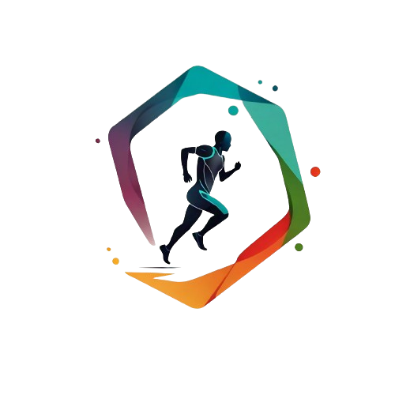

basket

Karl Anthony Malone es un exjugador de baloncesto estadounidense, miembro del Basketball Hall of Fame que disputó 19 temporadas en la NBA, 18 de ellas en los Utah Jazz, donde formó, junto con el base John Stockton, una de las parejas más relevantes de la historia de la NBA..
Charles Wade Barkley es un exjugador de baloncesto estadounidense que jugó durante dieciséis temporadas en la NBA desde 1984 a 2000. Con sus 1,98 metros de altura, está considerado uno de los mejores ala-pívots bajos en la historia de la liga
John Houston Stockton es un exjugador de baloncesto estadounidense cuya trayectoria profesional, entre 1984 y 2003 transcurrió íntegramente en el equipo Utah Jazz de la NBA. Con 1,85 metros de altura, está considerado uno de los mejores bases de la historia del baloncesto
Los Angeles Lakers son un equipo profesional de baloncesto de los Estados Unidos con sede en Los Ángeles, California. Compiten en la División Pacífico de la Conferencia Oeste de la National Basketball Association y disputan sus partidos como locales en el Crypto.com Arena, ubicado en el downtown de la ciudad.
Los Warriors son una de las tres franquicias originales de la NBA que sobreviven en la actualidad,Nota 1 y a lo largo de su historia han ganado un total de siete campeonatos de liga (son el tercer equipo más laureado de la competición, únicamente por detrás de los Boston Celtics y Los Angeles Lakers), siete títulos de Conferencia y doce títulos divisionales.
Los Phoenix Suns son un equipo profesional de baloncesto de los Estados Unidos con sede en Phoenix, Arizona. Compiten en la División Pacífico de la Conferencia Oeste de la National Basketball Association y disputan sus partidos como local es en el Footprint Center, ubicado en el centro de la ciudad de Phoenix.